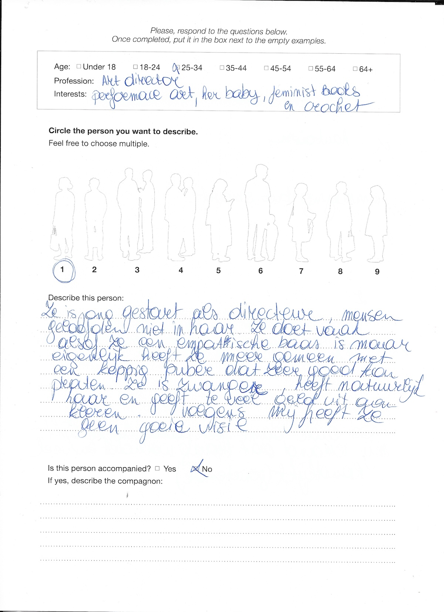
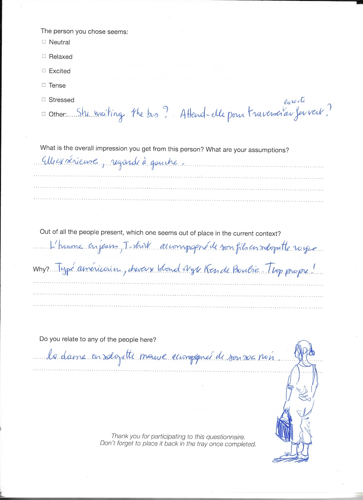
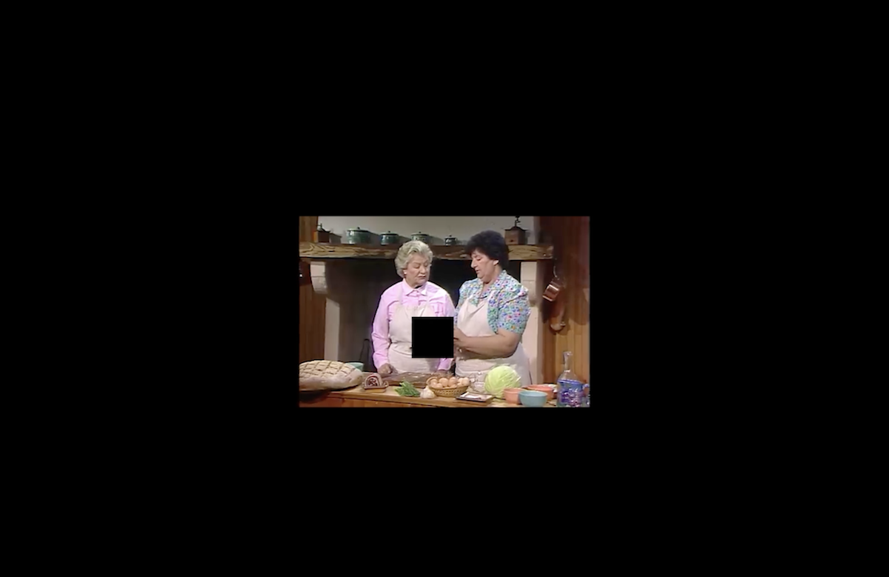
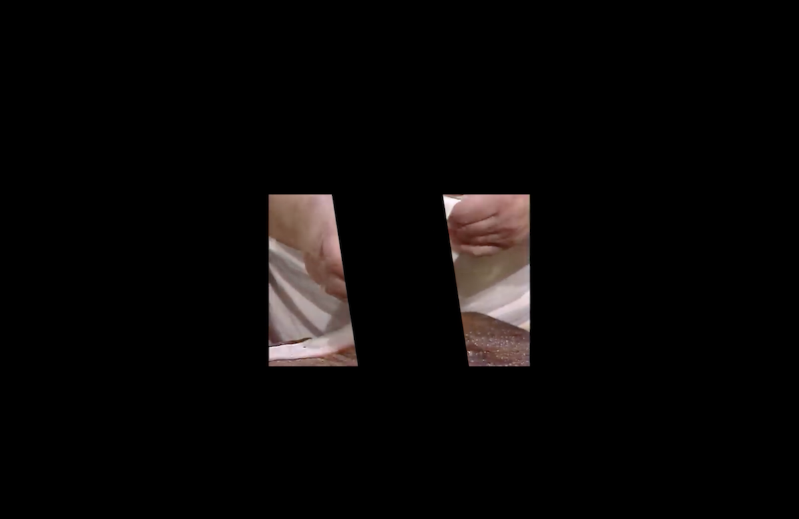
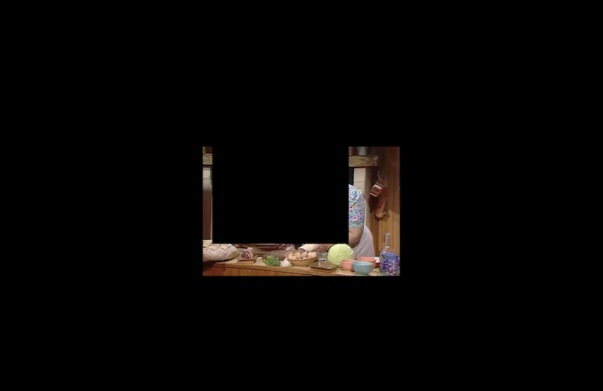

<!DOCTYPE html>
<html lang="en">
<head>
    <meta name="google-site-verification" content="47pKQUKNiLfiB0YzYA75Dx0bHkYyUDsCU6oA0tGKBeY" />
    <meta charset="UTF-8">
    <meta name="viewport" content="width=device-width, initial-scale=1.0">
    
    <!-- SEO & Identity Meta Tags -->
    <title>Clémence Ledent — Visual Artist & Performance</title>
    <meta name="description" content="Portfolio of Clémence Ledent (°2000, Brussels). Working with scripts, video performances and in situ audio installations">
    <meta name="keywords" content="Clémence Ledent, Visual Artist, Brussels, Installation Art, Media Art, Video Performance, Contemporary Art">
    <meta name="author" content="Clémence Ledent, clemence ledent">

    <!-- Social Media Preview Tags (Open Graph) -->
    <meta property="og:type" content="website">
    <meta property="og:url" content="https://clemenceledent.github.io/"> 
    <meta property="og:title" content="Clémence Ledent — Visual Artist">
    <meta property="og:description" content="Installations, video performances, and scripts exploring scripted social situations and spaces.">
    <meta property="og:image" content="https://clemenceledent.github.io/images/boke-kaas-1-website.jpg">

    <!-- Twitter Card Tags -->
    <meta name="twitter:card" content="summary_large_image">
    <meta name="twitter:title" content="Clémence Ledent — Visual Artist">
    <meta name="twitter:description" content="Portfolio of Clémence Ledent. Installations, video performances, and scripts.">
    <meta name="twitter:image" content="https://clemenceledent.github.io/images/boke-kaas-1-website.jpg">

    <style>
        /* ==========================================================================
           GLOBAL & CORE LAYOUT
           ========================================================================== */
        body { 
            margin: 0; 
            background: #fff; 
            min-height: 100vh; 
            font-family: "Helvetica Neue", Helvetica, Arial, sans-serif; 
            overflow-y: auto; 
            position: relative;
            font-size: 18px; 
        }

        #main-container { display: flex; width: 100%; min-height: 100vh; }
        /* Expanded content width to use free space */
        #content-display { width: 82%; padding: 80px 60px; box-sizing: border-box; }
        
        /* The Dots Container & Elements */
        #tab-dots {
            position: fixed;
            top: 0;
            right: 0;
            width: 18%;
            height: 100vh;
            pointer-events: none;
            z-index: 100;
        }

        .dot {
            width: 32px; height: 32px; border-radius: 50%;
            background: #000; border: 1.8px solid #000;
            box-sizing: border-box; cursor: pointer;
            transition: background 0.3s; position: absolute; pointer-events: auto;
        }
        #entry-dot { top: 15%; right: 5%; position: fixed; }
        #entry-dot.transformed { background: #fff; border-color: rgb(0, 0, 255); cursor: default; }
        .dot.active { background: rgb(0, 0, 255); border-color: rgb(0, 0, 255); }

        /* General Trigger Behavior (Prevents Jumping) */
        .trigger { cursor: pointer; color: #000; font-weight: 400; white-space: nowrap; width: fit-content; }
        .trigger.active { text-decoration: underline; }
        /* Expanded content-area max-width */
        #content-area { margin-top: 30px; color: #000; font-weight: 300; line-height: 1.6; max-width: 900px; }

        /* Horizontal Image Gallery Styling (Images made 20% bigger: 504px) */
        .horizontal-gallery {
            display: flex;
            gap: 20px;
            overflow-x: auto;
            margin-top: 25px;
            padding-bottom: 15px;
            scroll-behavior: smooth;
        }
        .horizontal-gallery img {
            height: 504px;
            max-height: 55vh;
            width: auto;
            object-fit: contain;
            flex-shrink: 0;
            border-radius: 2px;
        }
        /* Custom subtle scrollbar for horizontal gallery */
        .horizontal-gallery::-webkit-scrollbar {
            height: 6px;
        }
        .horizontal-gallery::-webkit-scrollbar-thumb {
            background: #ccc;
            border-radius: 3px;
        }
        .horizontal-gallery::-webkit-scrollbar-track {
            background: #f1f1f1;
        }

        /* ==========================================================================
           1. CONTACT SECTION (Styling)
           ========================================================================== */
        .blue-text { color: rgb(0, 0, 255); font-weight: 400; line-height: 1.4; }
        .contact-bio { 
            font-weight: 300; 
            color: #000; 
            margin-top: 40px; 
            line-height: 1.6; 
            max-width: 900px; 
        }

        /* ==========================================================================
           2. WORKS SECTION (Layout & Subtabs)
           ========================================================================== */
        .works-nav { 
            display: flex; 
            flex-wrap: wrap; 
            column-gap: 50px; 
            row-gap: 20px; 
            margin-bottom: 50px; 
            align-items: center; 
        }
        
        /* Work Subtab Numbers (Hidden by default, shown when Works tab is active) */
        .work-trigger {
            cursor: pointer; 
            color: #000; 
            font-weight: 400; 
            width: 32px; 
            height: 32px; 
            display: none; /* Only appears on Works tab */
            align-items: center; 
            justify-content: center; 
            font-size: 22px; 
            box-sizing: border-box;
            transition: none; 
            position: absolute; 
            pointer-events: auto;
        }
        .work-trigger.visible {
            display: inline-flex;
        }
        .work-trigger.active {
            background: #000; 
            border: 1.8px solid #000; 
            border-radius: 50%; 
            color: transparent; 
        }

        /* Collaborative Projects Styling */
        .collab-trigger.active-troue { text-decoration: underline; }
        .collab-trigger.active-braida { text-decoration: underline; }
        .collab-trigger.active-rotte { color: brown; }

        /* Special 'o' for Le bazar troué */
        .filled-o { position: relative; }
        .collab-trigger.active-troue .filled-o::before {
            content: ""; position: absolute; width: 7px; height: 7px;
            background: #000; border-radius: 50%; top: 55%; left: 50%;
            transform: translate(-50%, -50%); z-index: -1;
        }

        /* ==========================================================================
           3. TEXT SECTION (Layout & Subtabs)
           ========================================================================== */
        .subnav-container { display: flex; flex-direction: column; gap: 15px; margin-bottom: 50px; }
        
        /* Links between Work and Text */
        .link-to-work { color: #ea5bf6; text-decoration: underline; cursor: pointer; }
        .link-to-text { color: rgb(0, 0, 255); text-decoration: underline; cursor: pointer; }

        /* ==========================================================================
           4. THANK YOU NOTE (Right column, directly under navigation dots)
           ========================================================================== */
        #thank-you-note {
            position: absolute;
            bottom: 30px;
            right: 20px;
            left: 20px;
            font-size: 13px;
            font-style: italic;
            color: #000;
            text-align: right;
            line-height: 1.4;
            pointer-events: none;
        }
    </style>
</head>
<body>

    <div id="entry-dot" class="dot"></div>
    <div id="tab-dots"></div>

    <div id="main-container">
        <div id="content-display"></div>
    </div>

    <script>
        const tabs = ['Contact', 'Works', 'Collaborative projects', 'Text'];
        // Updated workKeys order matching your numbering schema (1 to 11, skipping 6)
        const workKeys = ['residus', 'kitchen', 'waitingline', 'chihuahua', 'boke', 'celebratie', 'abc', 'untitled', 'sunnyside', 'metverwarring'];

        /* ==========================================================================
           DATA: WORKS CONTENT
           ========================================================================== */
        const worksData = {
            'residus': { 
                info: '<strong>Residus (Bartsoen)</strong> (2026)<br>In situ sound installation: obsessively tidied conference room, handmade speakers<br><br><em>A staging of presence through absence. Speakers are scattered throughout the space, emitting commonplace sounds of four invisible characters. The work uses ambient sound to trigger a hyper-awareness of the physical space and the bodies that occupy it.</em><br><br><br><br><br><br><br><br>' 
            },
            'kitchen': { 
                info: '<strong>Situation for a small kitchen and adjacent dining room with a narrow window giving on the outside.</strong> (2026)<br><br><div class="horizontal-gallery"></div>' 
            },
            'waitingline': { 
                info: '<strong>The waiting line</strong> (2026)<br>1:1 cardboard cutouts, questionnaires<br><br><em>How do we perceive? A reflection on social stereotypes and collective assumptions. Life-sized figures, viewed only from behind, generated by AI based on descriptions of people I encountered in Ghent. Spectators are invited to fill out questionnaires, speculating on the hidden lives and identities of these anonymous individuals.</em><br><br><div class="horizontal-gallery"></div>' 
            },
            'chihuahua': { 
                info: '<strong>The chihuahua theory</strong> (2026)<br>Text and temporary tattoo<br><em>The tattoo lives on ones body, leaving only the description of the chihuahua.</em><br><br><div class="horizontal-gallery"></div>' 
            },
            'boke': { 
                info: '<strong>Boke kaas</strong> (2026)<br>Video performance<br><br><em>Three characters are making and eating a cheese sandwich. They stare just past the camera.</em><br><br><br><br><br><br>' 
            },
            'celebratie': { 
                info: '<strong>celebratie compagnons</strong> (2026)<br>Sculptural installation<br><br><em>Curly ornaments that wish to celebrate the space.</em>' 
            },
            'abc': { 
                info: '<strong>A, B, C</strong> (2025)<br>Video performance, script<br><br><em>Research on entropy (tested in a controlled environment). Seated at a table, one character attempts to contain the rising tension between the two others.</em><br><br><br><br><br><br>' 
            },
            'untitled': { 
                info: '<strong>Untitled (pas de mousquetaires)</strong> (2025)<br>Archival video, digital alteration<br><br><em>Archival video exploration featuring digital alteration.</em><br><br><br><br><br><br>' 
            },
            'sunnyside': { 
                info: '<strong>Sunny side Up</strong> (2025)<br>Collage series, poster design<br><br><em>Presented during Le Bazar troué at Salvatore Ghent.</em>' 
            },
            'metverwarring': { 
                info: '<strong>Met verwarring in de wachtruimte</strong> (2024)<br>Performance, mise-en-scène<br><br><em>Immersive performance navigating around a counter. Participants wear jackets blending them into the architecture. Guided through a cycle of calculated confusion, the participants get stuck in a loop staging the impossibility of truly accessing the "other side".</em>' 
            }
        };

        /* ==========================================================================
           DATA: THANK YOU NOTES (For specific works)
           ========================================================================== */
        const thanksData = {
            'waitingline': 'Thanks to the visitors to answer the questionnaire',
            'boke': 'Thanks to Puck van der Poel, Merel Van den Eynde, Oona Antonissen, Rinke Van Der Veen, Elisa Palm, Freek Lannoo, Thomas Joostens',
            'abc': 'Thanks to Malou Legrand, Puck van der Poel, Rinke Van Der Veen'
        };

        /* ==========================================================================
           DATA: COLL
